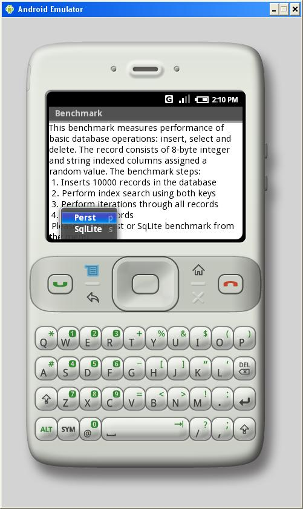

Android is neither Java ME (J2ME)- nor J2SE-compatible. It provides its own framework of classes, but most of the Java 1.6 SE classes are present here, so it is possible to use Perst version 1.5 under Android. Although Android includes a built-in database system, SQLite, Perst provides better performance (almost ten times better in our TestIndex benchmark test) and of course, Perst delivers the benefits of object orientation, including a seamless interface with application objects, and the ability to persist complex data structures.
Although the perst.jar library can be used under Android without any
changes, there is one aspect which should be noted. It is not possible to pass just name of the file
to Storage.open method - it will cause java.io.FileNotFound exeption.
You should exother explictely specify absolute path, either use
android.content.ContextWrapper.getFileStreamPath method to obtain absolute path to the file:
String databaseName = "testindex.dbs";
String databasePath = getFileStreamPath(databaseName).getAbsolutePath();
// Get instance of Perst storage
Storage db = StorageFactory.getInstance().createStorage();
// Open the database with given database name and specified page pool (database cache) size
db.open(databasePath, pagePoolSize);
This Perst distributive includes a port of the Perst TestIndex benchmark to the Android platform.
TestIndex.java is a very simple benchmark
measuring performance of basic database operation: inserting, searching and deleting records. It uses simple records with two primary
key columns: one of 8-byte integer type and another of string type. These columns are assigned random values during database initialization.
The benchmark consists of four steps:
To allow comparison of Perst's performance with that of the built-in SQLite database system, this application includes a port of the benchmark for SQLite. The structure of the application is the following:
To build and run this application you need to have the Eclipse IDE with an installed Android plugin. All necessary information about installing the Android plugin for Eclipse is available here. To get started with the TestIndex benchmark, follow these steps:
|
 |
For support please e-mail support@mcobject.com or visit our Perst support forum at http://forums.mcobject.com/.